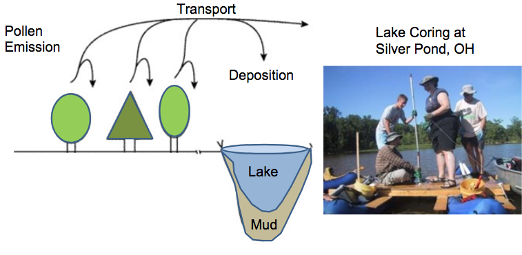
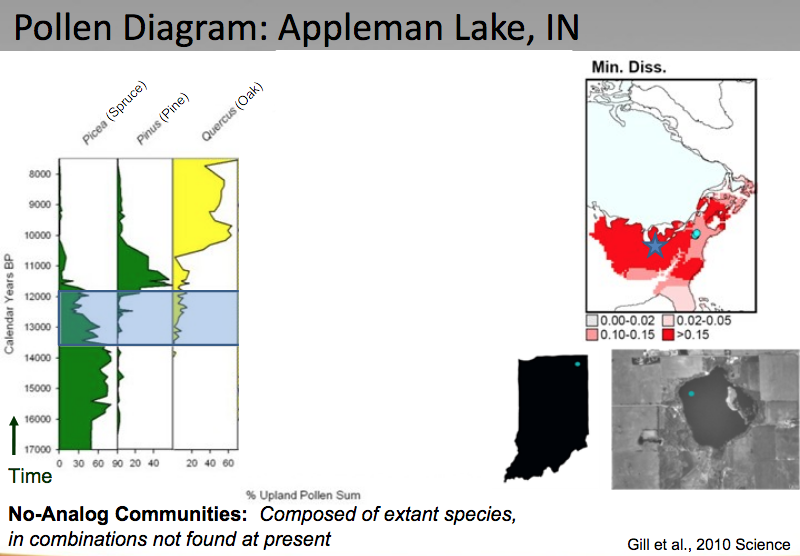
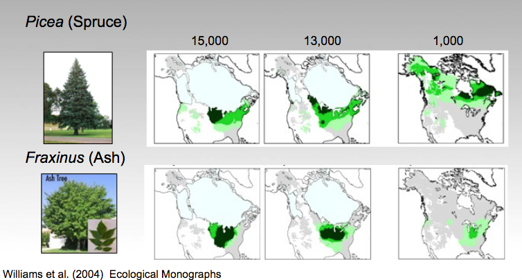
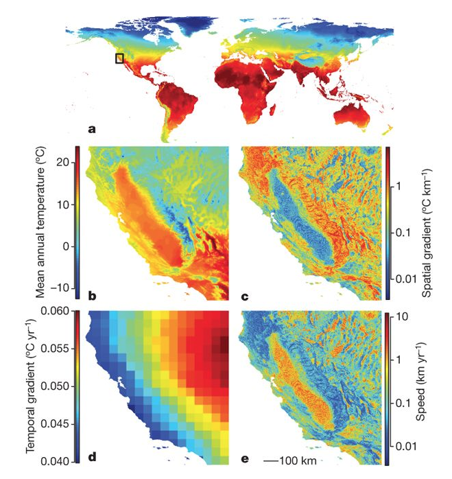

class: center, middle, inverse # Seed Dispersal "Are you suggesting coconuts migrate?" --- #Seeds <iframe width="420" height="315" src="//www.youtube.com/embed/buZV0h4vfmQ" frameborder="0" allowfullscreen></iframe> --- #Why disperse? Isn't it nicer here? *Hint: think about selection* --- class: center, middle, inverse # Patchy world <img src="http://jimrharris.smugmug.com/AerialPhotographs/My-Favorite-Aerial-Photos/i-WMXNgGV/0/XL/DSC_0178-XL.jpg" style="width: 600px;"/> --- class: center, middle, inverse #Sky Islands <img src="http://www.friendsofmaderacanyon.org/images/Santa%20RitasSkyIslandDMoore.jpg" style="width: 800px;"/> --- class: center, middle, inverse #The problem of rare events <img src="https://upload.wikimedia.org/wikipedia/commons/thumb/9/96/Pacific_Ocean_laea_location_map.svg/2000px-Pacific_Ocean_laea_location_map.svg.png" style="width: 400px;"/> --- class: center, middle, inverse <img src="http://www.davidrumsey.com/rumsey/Size4/D0117/5746033.jpg " style="width: 600px;"/> Distance to Hawaii: 3,759 km --- class: center, middle, inverse <img src=" http://memory.hawaii.edu/docs/IO/9450/img9450.jpg " style="width: 500px;"/> --- class: center, middle, inverse # Changing world (source: NOAA) <img src="https://www.ncdc.noaa.gov/sites/default/files/styles/716px_width/public/glacial-interglacial.jpg?itok=19bwFcU9" style="width: 700px;"/> --- <p></p> --- <p></p> --- ## Response to past and future climate change options: 1. Die 2. Sit tight and hang on for the ride (hope for no glaciers) 3. Migrate 4. Evolve --- <p></p> --- ## The data suggests that: - Migration was the primary response to the ice ages - These migrations were highly individualistic - no two species behaved alike source and more reading Williams et al. 1999 --- class: center, middle, inverse #Dispersal kernal <img src="http://www.fsd2010.org/data/Image/phototheque/Fruits%20and%20seeds/kernel.jpg" alt="Drawing" style="width: 500px;"/> Cardamine pensylvanica; Molofsky and Ferdy (2005, PNAS) --- Species that today don't grow together were close neighbors --- class: center, middle, inverse New Concept: Climate velocity (Loarie et al. 2009) <p></p> --- class: center, middle, inverse <img src=" http://4.bp.blogspot.com/-G0zT03GSTlE/Uqwft7cUBVI/AAAAAAAACfc/p_kTJb25pf0/s1600/Seeds+dispersal+by+animals+vs+by+wind.png " style="width: 600px;"/> --- class: center, middle, inverse <img src=" http://www.field-studies-council.org/breathingplaces/Images/feeding/food-for-us.jpg " style="width: 800px;"/> --- class: center, middle, inverses #Hooks and spikes <iframe width="420" height="315" src="//www.youtube.com/embed/8ZLv3xAjH3Q" frameborder="0" allowfullscreen></iframe> --- #Super long dispersal: water <iframe width="420" height="315" src="//www.youtube.com/embed/7UTWMhFhMFc" frameborder="0" allowfullscreen></iframe> --- #Super long dispersal: wind <iframe width="420" height="315" src="//www.youtube.com/embed/slUkyA2cy60" frameborder="0" allowfullscreen></iframe> --- #Dispersal: Fail <iframe width="420" height="315" src="//www.youtube.com/embed/vCyOVk5yY1s" frameborder="0" allowfullscreen></iframe> --- #Important concepts -- 1. Evolutionary advatages of dispersal -- 2. A patchy world in space -- 3. A changing world in time -- 4. Dispersal kernal -- 5. Dispersal "limitation" -- 6. Importance of rare events --- "Are you suggesting that coconuts migrate?" <iframe width="420" height="315" src="//www.youtube.com/embed/JHFXG3r_0B8" frameborder="0" allowfullscreen></iframe> --- class: center, middle, inverse #See you Wednesday